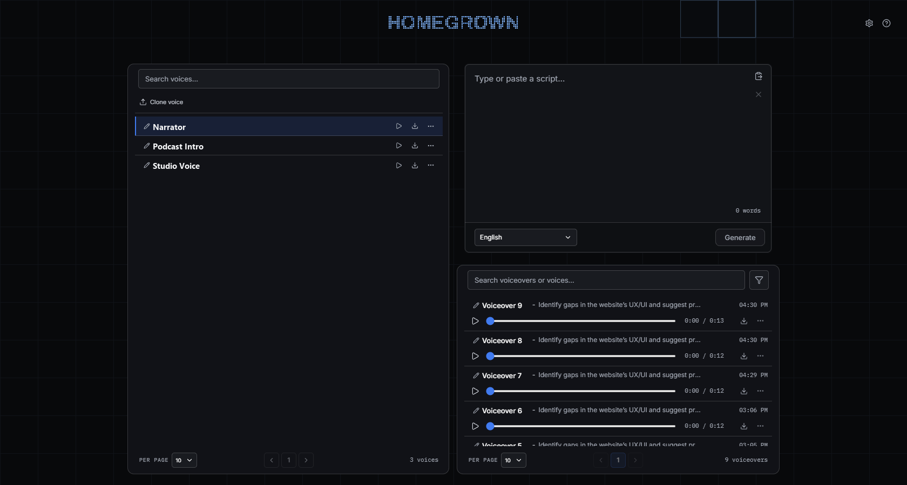
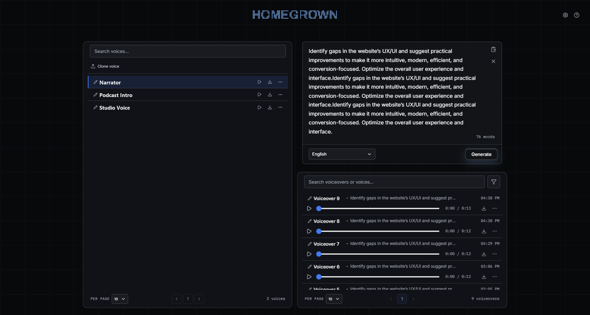
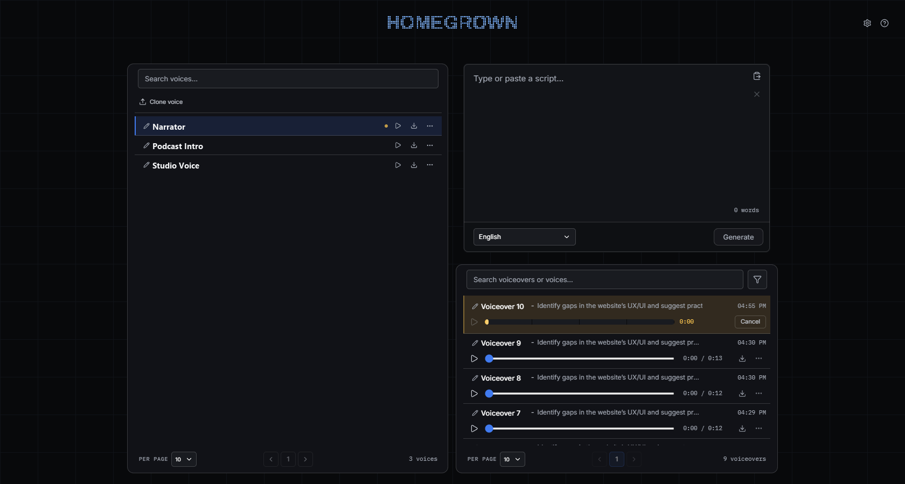

Make recurring voiceovers
with a voice that stays yours.
Choose or add a voice.
Clone voice, or drop audio files here.
Write the script.
Type or paste. Choose a language in the footer.
Generate a voiceover.
Extra requests join the generation queue.
Voiceover history.
Reuse restores the script, voice, and language.